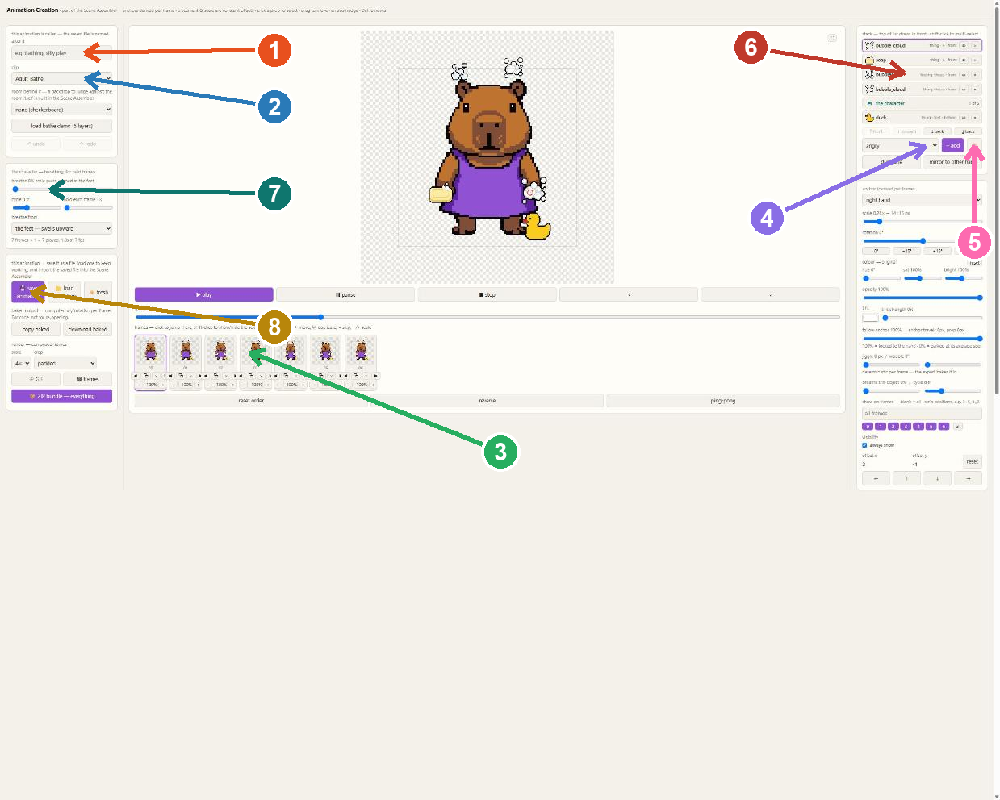
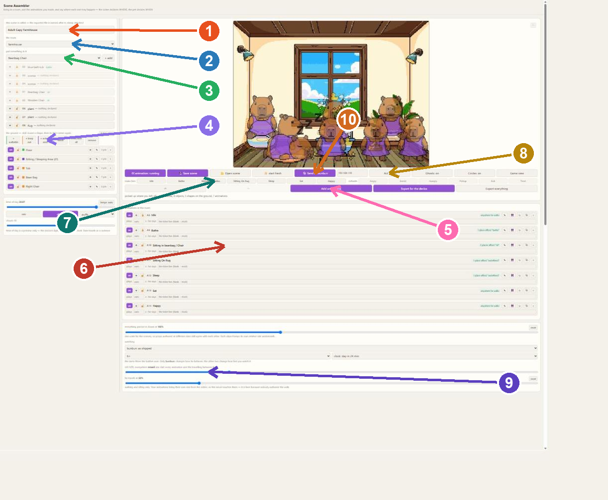

🐇 Bunbun and Me
How to make things for your new friend
Hello! A bunbun lives on your shelf now. It is a real little friend — it gets
hungry, it gets sleepy, it plays, and it loves you.
The coolest part: YOU get to build its world. You can make its animations, draw its
things, build its room, and press one button to put it all on your bunbun's screen.
And don't worry — you cannot break anything. Not your bunbun, not your work.
Everything saves by itself, and your bunbun always wakes up safe in the morning.
🎨 Page 1: Animation Creation — make bunbun DO something
This page makes one move — like eating a snack, or a silly dance, or a nap.
Ask a grown-up to open it for you, then follow the numbers:

★Pick your animal! Bunny, penguin, frog, cat,
dog, capybara, croc… whoever you pick stays your animal all the way to the screen.
1Name it! Like "Munching Snacks" or "Super Nap".
2Pick what bunbun is doing. Eating? pick the Eat one.
Sleeping? pick Sleep. This is how the game knows what your move IS.
3The little film strip. Each picture is one moment.
Click them, move them, copy them — that's how the move dances.
4+ add gives bunbun things to hold — a soap,
a duck, a snack. You can put them in a hand, on the head, anywhere.
5The paintbrush lets you DRAW YOUR OWN thing!
Draw a cookie and bunbun can really hold it.
6The stack is the pile of things. Top of the list
is in front.
7Breathing makes bunbun look alive when it holds
still. Try around 5 — you'll see its tummy go up and down.
8Save! Your move becomes a little file. You'll
bring it to the next page.
🏠 Page 2: Scene Assembler — build bunbun's WORLD
This page is the room where bunbun lives. Follow the numbers:

1Name your world.
2Pick the room.
3Put things in — a bathtub, a bean bag,
plants, a rug. Drag them where you like.
4Draw the ground. Green = where bunbun may walk.
Red = "walk through, but don't stand around here". Purple = a special spot you can name.
5Add animations — the moves you saved on
Page 1 come in here.
6Each move gets its own row. Here you choose WHERE
it happens, how many seconds it plays, and what bunbun SAYS — your own words show
on bunbun's screen! There's also counts as: tell the game your move is the eating one,
the bath one, the job, the toilet, or the sleep — then the buttons know to use YOURS.
7make him: press any move to watch bunbun do it
right now. Great for testing!
8Act it out turns the room ON — bunbun walks
around and lives in it, right on your screen.
9HIS SIZE — one slider makes bunbun bigger or
smaller everywhere. One size for everything looks best.
10📦 save a bunbun package!
The magic button. It packs your WHOLE world — every room, every move, your drawings —
into one little file. Then ask a grown-up to open your bunbun's own page
(http://bunbun-XXXX.local/build — the XXXX is your bunbun’s own four
letters, and a grown-up can find them once) and give it the file. Your bunbun checks itself before and
after, so your friend is always safe.
🚪 More rooms! A kitchen, a bathroom, a job
See the box that says "this room is…"? That's how one room becomes a whole HOUSE:
🍳The kitchen (out the left side) — put a
food spot in it and mark your eating move counts as: eating. Press FEED and bunbun walks
out the door, through the kitchen, and eats YOUR meal.
🚿The bathroom (left too) — a toilet, a
tub, a sink. Bunbun goes potty all by itself every so often — and it always washes
its hands after. You taught it that!
🔨The work room (out the right side) —
give it a job move (counts as: his job). Press WORK and bunbun goes and does two little
jobs, has a wander, and comes home. Working makes bunbun proud.
Bunbun always walks out the side of the screen, through the middle of the next room, does its
thing, and comes back home. Home is where it sleeps — on the sleepy spot you picked.
The sky is yours too! The rain, clouds and stars buttons put real
weather in your windows — and the sun crosses the sky in the day, the moon at night, on the
real clock. Draw a sky box where the sky shows and the clouds float exactly there.
✨ What happens next
Your bunbun starts living in
your world. It decides things by itself, like a real pet:
- When it's hungry it looks hungry — press FEED and it walks over and eats
your eating move.
- Press BATH and it goes to the tub you placed and does your bath.
- At bedtime it walks to the sleepy spot you picked, and sleeps till morning. It ALWAYS
wakes up.
- Every so often it needs the potty — off it goes, and washes its hands after.
- A little cat comes to visit, naps on the chair, and sometimes knocks things over.
Bunbun huffs… and tidies up.
- The rest of the time it wanders, sits where you said sitting happens, and says the
words you wrote.
No two days are ever the same, because bunbun makes its own little choices.
💬 Lost? Press the big ? button. It sits in the corner of the Scene
Assembler and walks you through a whole room, one little step at a time. It even notices
when you do each thing and cheers you on. Press it as many times as you like.
Three friendly rules:
💙 Your work saves itself. If something looks stuck, just refresh the page —
everything you made is safe.
💚 If a message pops up at the bottom, read it — the page is telling you what it
needs (like "give something the eat power first").
💜 Take care of your bunbun. It's yours.